O Rato — Hardware
Visão geral do robô: dimensões, componentes adquiridos e arquitetura física
Características gerais
O Micromouse é um robô autônomo de pequenas dimensões projetado para navegar e solucionar labirintos de forma automatizada. O sistema integra percepção sensorial, processamento embarcado e acionamento motorizado em uma estrutura compacta e leve.
Pontos de projeto
- CG rebaixado — componentes pesados na parte inferior para manter aderência nas curvas
- Estrutura o mais larga possível para resistir à força centrípeta nas curvas
- Centro de rotação situado no centro geométrico do robô
- Sistema de 4 rodas com tração dianteira e diferencial lateral
- Controle independente por motor acoplado a cada lado (direção diferencial)
- Chassi de dois andares em PETG (impressão 3D), com 3 cm de espaçamento entre andares
- Labirinto de teste em MDF — estrutura modular para diferentes configurações
Materiais estruturais
- Chassi: PETG — resistente, durável e flexível para absorção de impactos
- Labirinto de teste: MDF 12mm — versátil e de fácil reconfiguração
- Colunas com arredondamentos nas bases para evitar concentradores de tensão
Vistas do projeto mecânico
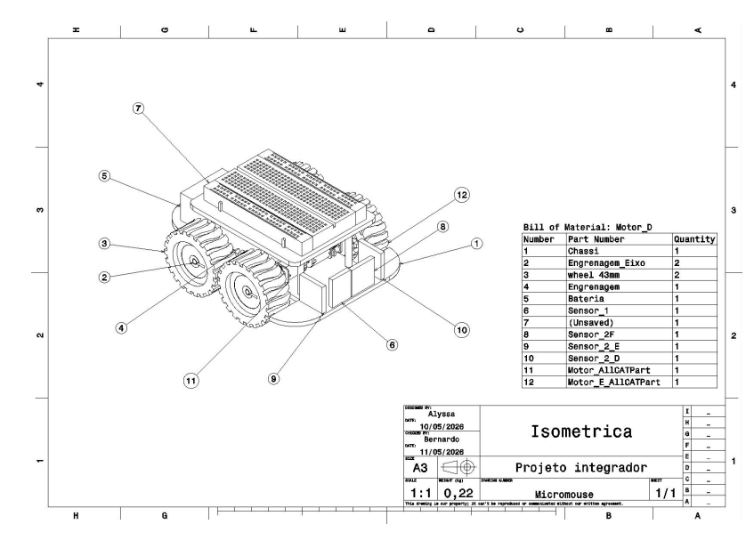
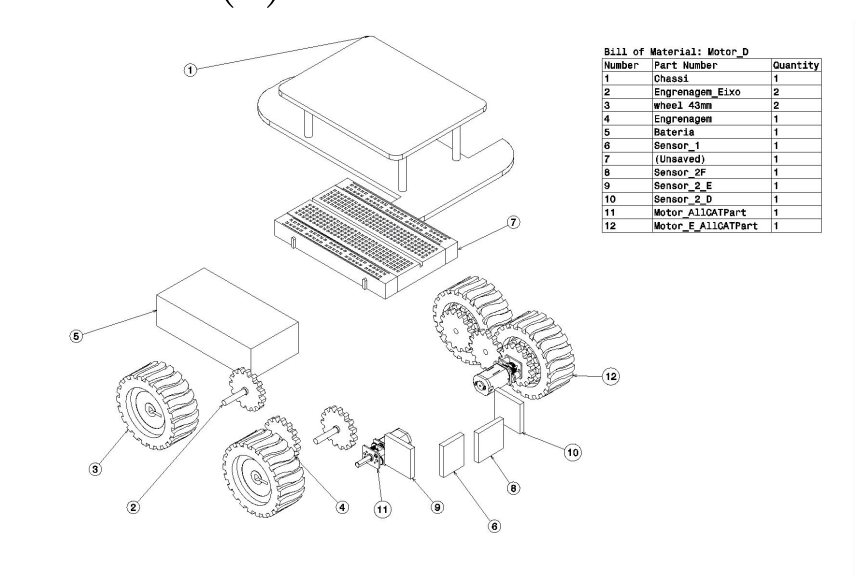
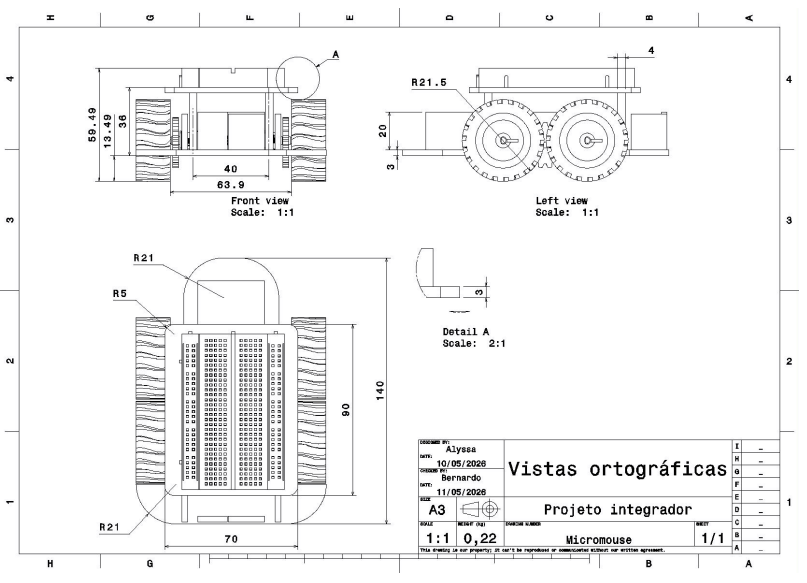
Componentes adquiridos
Lista completa de itens comprados para montagem do Micromouse, com tipo e valor realizado.
| Item | Tipo | Valor realizado (R$) | Função no sistema |
|---|---|---|---|
| ESP32-C3-MINI-1 | Eletrônico | R$ 67,06 | Microcontrolador central |
| Bateria LiPo 7.4V 1100mAh 20C | Elétrico | R$ 129,00 | Fonte de alimentação |
| Micro Motor N20 6V 500RPM (×2) | Elétrico | R$ 28,40 | Tração e locomoção |
| Mini Ponte H L298N (×2) | Matéria-prima | R$ 4,90 | Driver de controle dos motores |
| Sensor APDS-9960 | Eletrônico | R$ 25,40 | Sensor de gestos e cores (detecção de chão/paredes) |
| Módulo RF MX-FS-03V 433MHz | Eletrônico | R$ 9,90 | Detecção de proximidade / obstáculos |
| Encoder AS5048A (×3) | Eletrônico | R$ 27,79 | Odometria e controle de velocidade |
| Sensor INA226 | Eletrônico | R$ 37,85 | Monitoramento de tensão, corrente e potência |
| Roda N20 44mm | Matéria-prima | R$ 10,90 | Locomoção |
| Suporte plástico motor N20 | Matéria-prima | R$ 4,50 | Fixação dos motores na estrutura |
| Resistores (divisores de tensão) | Eletrônico | R$ 3,00 | Adequação de tensão entre componentes |
| Capacitor cerâmico 100pF/50V | Eletrônico | R$ 0,09 | Filtragem e estabilização do circuito |
| Madeira MDF 12mm | Matéria-prima | R$ 250,06 | Labirinto de teste e estrutura física |
Eletrônica
Arquitetura do circuito, regulação de tensão e diagrama de blocos
Arquitetura eletrônica
O ESP32-C3-MINI-1 atua como unidade central de processamento, lendo sinais dos sensores e gerando comandos de controle. A bateria LiPo 7,4V alimenta o sistema, com regulação de tensão por regulador Buck LM2596 para a linha lógica de 3,3V.
Fluxo de controle
- Sensores → ESP32-C3 (leitura e processamento)
- ESP32-C3 → Driver L298N (comandos PWM/direção)
- Driver L298N → Motores N20 (potência elétrica)
- Chaveamento flip-flop tipo D → ligar/desligar rodas independentemente (00/11 = parado; 10/01 = rotação)
- INA226 → monitoramento energético em tempo real
Sensores embarcados
- APDS-9960 — detecção de cor no topo da parede do labirinto (até 400 kHz)
- Módulo IR LM393 (×3) — detecção de obstáculos frontais e laterais (até 20 kHz)
- AS5048A (×3) — encoders magnéticos para odometria
- INA226 — tensão, corrente e potência da bateria via I²C
Comunicação
- Wi-Fi 2,4 GHz via ESP32 — rede própria gerada pelo microcontrolador
- Comunicação bidirecional via WebSocket (porta 3001)
- Firmware armazenado na ROM; processamento em RAM do ESP32
Diagrama de blocos
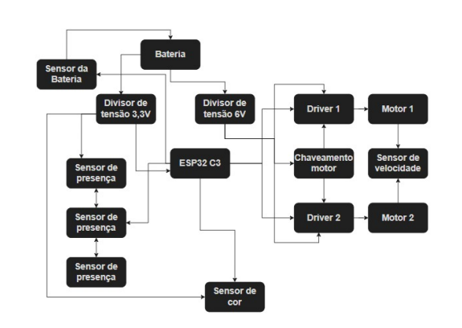
Regulação de tensão
A bateria fornece 7,4V. O sistema utiliza um regulador Buck LM2596 para fornecer a tensão de 3,3V à linha lógica (ESP32, sensores, encoders). Os motores são alimentados diretamente pela bateria (7,4V via driver L298N). Um fusível de vidro 1,5A protege o sistema de sobrecorrente.
7,4V direto
Alimentação direta da bateria para os drivers L298N e motores N20
7,4V → 3,3V
Regulador Buck LM2596 — ESP32, sensores IR, encoders, INA226
Fusível 1,5A + Capacitores
Fusível em série com bateria; capacitores nos módulos para absorver transientes de corrente dos motores
V_motores = 7,4V (direto da bateria LiPo 2S) — L298N + N20
Fusível: 1,5A em série com os conectores da bateria
Esquemático do circuito
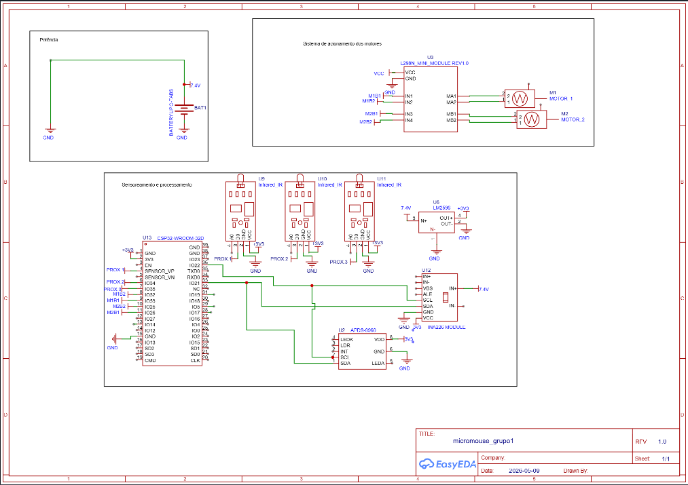
PCB — Layout da placa
Sistema de Energia
Análise de consumo, dimensionamento da bateria e planejamento do circuito de alimentação
Consumo por componente
Parâmetros de operação de cada componente. Tempo de referência: 1800 s (30 min / 3 tentativas).
| Componente | Qtde | Tensão (V) | Corrente (mA) | Potência (W) | Energia (J) |
|---|---|---|---|---|---|
| ESP32-C3-MINI-1 | 1 | 3,3 | 80 | 0,264 | 475,20 |
| Sensor IR LM393 | 3 | 3,3 | 15 | 0,050 | 267,30 (total) |
| Driver MX1508 | 2 | 7,4 | 0,10 | 0,0007 | 1,33 (total) |
| Motor N20 | 2 | 7,4 | 250 | 1,850 | 6.660,00 (total) |
| INA226 | 1 | 3,3 | 0,33 | 0,001 | 1,96 |
| APDS-9960 (sensor cor) | 1 | 3,3 | 0,20 | 0,0007 | 0,12 |
| Regulador Buck LM2596 | 1 | 7,4 | 10 | 0,074 | 100,00 |
E_total = 7.505,91 J → 7505,91 / 3600 ≈ 2,085 Wh
Dimensionamento da bateria
Parâmetros
- Corrente média total: 635,63 mA ≈ 0,6356 A
- Margem de segurança: 50% (picos de partida, frenagem e perdas térmicas)
- Corrente projetada: 0,9534 A
- Capacidade mínima: 477 mAh (para 0,5h)
- Corrente máxima teórica: 22 A (1,1 Ah × 20C)
Faixa de tensão operacional
Limite crítico de descarga: 3,3V/célula (6,6V total). Em plena carga: 4,2V/célula (8,4V total).
Proteções implementadas
- Fusível de vidro 1,5A em série com a bateria
- Conectores fixos e soldados — imune a inversão de polaridade
- Capacitores para absorver transientes dos motores
Monitoramento e validação
O sensor INA226 é conectado em série com a alimentação da bateria (via I²C ao ESP32) e mede tensão, corrente e potência em tempo real durante o percurso.
Critérios de validação da bateria
- Tensão não deve cair abaixo de 6,6V ao longo do teste
- Deve fornecer alimentação contínua durante toda a operação
- Carga restante ao final deve superar o valor teórico calculado
- Lógica de desarme por baixa tensão validada em 0,88 s nos testes unitários
Variáveis transmitidas por telemetria
- Tensão da bateria (V)
- Corrente elétrica (mA)
- Carga restante em Coulombs (C) e percentual (%)
- Potência instantânea (W)
Resultados dos testes de consumo
- Sistema estabilizou sem reinicializações abruptas na alimentação 7,4V real
- Relação P = V · I confirmada consistentemente nas medições
- Sensores operaram a 20 kHz de amostragem (muito acima do limite de Nyquist de 88,88 Hz)
Estrutura Física e Mecânica
Dimensionamento do robô, análise dinâmica, locomoção, simulações e labirinto de teste
Análise dinâmica
O projeto levou em conta três comportamentos do centro de gravidade (CG) durante a operação:
Robô parado
Todo o peso é transferido para as rodas (pontos de contato com o solo).
Robô acelerando / desacelerando
O peso se desloca pela reação à aceleração. CG baixo reduz esse deslocamento e mantém aderência.
Robô em curva
A força centrípeta transfere peso para a roda externa. Robô mais largo e CG mais baixo reduzem risco de capotamento.
Decisão de projeto
- Bateria posicionada no andar inferior
- Componentes pesados centralizados em relação aos pneus
- Largura maximizada dentro dos limites do labirinto
Diagramas de corpo livre
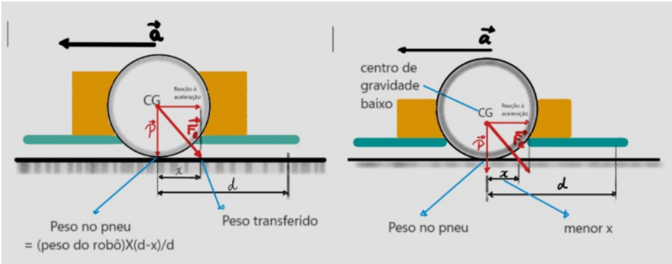
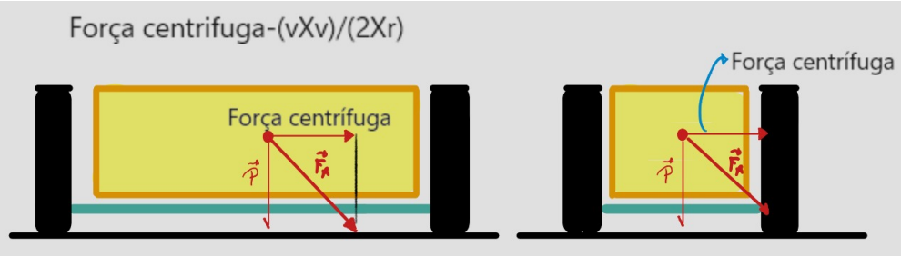
Dimensionamento
Restrição máxima (labirinto)
- Largura máxima: 18 cm
- Comprimento máximo: 18 cm
Restrição de curvas
- Curva 45° → largura máx. 127 mm
- Curva 90° → raio de 90 mm → comprimento máx. 202 mm
Dimensões finais escolhidas
- Comprimento: 140 mm (14 cm)
- Largura: 100 mm (10 cm)
- Sobra: ~60mm comprimento, ~30mm largura
Simulações estruturais (ANSYS)
Duas simulações complementares foram realizadas para verificar a integridade estrutural do chassi PETG. As tensões mecânicas permaneceram rigorosamente na zona elástica em ambos os cenários.
Simulação de colisão frontal contra parede de MDF a 6 km/h (fator de segurança, pois velocidade real é 3,2 km/h).
- Material: PETG (propriedades e direção de fibras configuradas)
- Resultado: sem danos ou risco estrutural severo
Simulação do peso estático dos componentes sobre o chassi (g = 9,71 m/s²).
- Sensor frontal: 15 g | Bateria: 96 g | Placa: 70 g | Motor: 20 g
- Resultado: sem tensão ou deformação crítica
Fator de segurança da simulação: 6 km/h / 3,2 km/h ≈ 1,875×
Sistema de locomoção
Estabilidade
4 rodas com tração dianteira. A bateria compacta e pesada exige ponto extra de apoio, tornando a configuração 4 rodas necessária.
Manobragem
Direção diferencial — um motor por lado. Sistema de engrenagens garante tração em todas as rodas com diferencial entre lateral esquerda e direita. As rodas rotacionam em torno do ponto central geométrico do robô.
Controle dos motores
Circuito de chaveamento baseado em flip-flop tipo D permite ligar/desligar cada motor independentemente. Drivers L298N fazem a interface de potência entre ESP32 e motores.
Desempenho verificado
- Motores capazes de atingir 750 RPM; operados no máximo a 500 RPM
- Velocidade real a 500 RPM: 3,2 km/h
- Curvas de 90° executadas sem derrapagens ou colisões nos testes físicos
Foto / render do robô montado
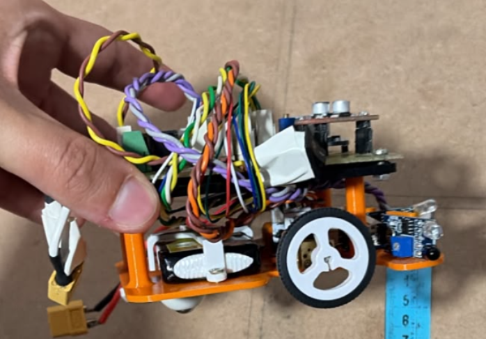
Labirinto de teste construído
Especificações
- Dimensão: 4×4 células (para validação inicial)
- Material: MDF 12mm (R$ 250,06 realizado)
- Objetivo: módulo central 2×2 — robô deve parar ao atingir essa região
- Estrutura modular — permite mudanças de layout entre testes
- Compatível com padrões de competições acadêmicas
Casos de teste planejados
- CT01 — "Chegar ao Centro": robô parte de (0,0) e alcança o centro usando FloodFill
- CT02 — "Explorar Retorno": do centro, robô retorna ao ponto (0,0) para iniciar Fase 2
Resultados de integração física
- Robô navegou pelo labirinto desconhecido identificando paredes físicas
- Região central (2×2) detectada e parada completada dentro da tolerância
- Speed Run executado sem colisões após mapeamento
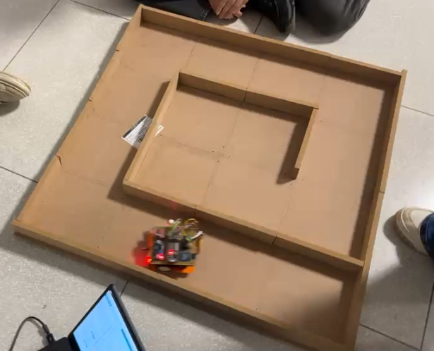
Software
Firmware embarcado, arquitetura web, banco de dados, backlog e resultados de testes
Firmware embarcado (C++)
Roda diretamente no ESP32-C3-MINI-1 via PlatformIO. É a camada mais próxima do hardware.
Responsabilidades
- Leitura contínua dos sensores (APDS-9960, IR LM393, encoders)
- Processamento FIFO dos dados sensoriais
- Validação e descarte de leituras inválidas
- Geração de comandos de navegação a cada ciclo (≤ 30 ms)
- Execução do algoritmo FloodFill para mapeamento e rota ótima
- Controle PWM dos motores via driver L298N
- Transmissão de telemetria para o servidor via Wi-Fi/WebSocket
- Fail-safe automático em perda de conexão > 10s
Recursos de hardware utilizados
- RAM: 7,1% ocupado (23.112 / 327.680 bytes)
- Flash: 20,5% ocupado (269.097 / 1.310.720 bytes)
Camada de software web
Interface externa que captura, exibe e registra dados de telemetria em tempo real.
Front-end — ReactJS
- Tela inicial com acesso a nova travessia e histórico
- Visualização do mapa do labirinto em tempo real
- Painel de telemetria: velocidade, bateria, tempo, posição
- Botões de início e parada de emergência
- Tela de detalhe com replay de execução
- Filtros de histórico por status, tamanho de matriz e métricas de bateria
Back-end — Node.js
- Broker WebSocket (porta 3001) para telemetria bidirecional
- Comunicação com banco de dados PostgreSQL
- Exposição de APIs REST para o front-end
- Gerenciamento de início e encerramento de execuções
- Latência de telemetria backend → frontend: inferior a 50 ms
Modelo de banco de dados — PostgreSQL
numTentativa · percentualBateria · velocidadeMedia · tempoConclusao · desafioCumprido · correnteEletrica · tensaoEletrica · tipoLabirinto
numTentativa · tempoColeta · tensaoRecente · correnteRecente · posHRecente · posVRecente · velocidadeAtual · bateriaAtual · tensaoAtual · sensorCor · sensorEsquerda · sensorDireita · sensorFrontal
passo · pos_h · pos_v · direcao · numTentativa
Relacionamentos: HISTORICO (1) → (n) TELEMETRIA · HISTORICO (1) → (n) TRAJETO
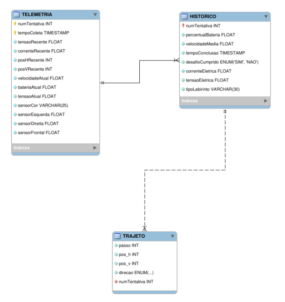
Diagrama de atividades — fluxo do sistema
O fluxo opera em três raias: Firmware, Servidor e Interface Gráfica.
- Botão físico pressionado → firmware inicializa o sistema
- Servidor recebe sinal e comunica posição inicial
- Interface exibe início da operação ao usuário
- Firmware percorre o labirinto em loop
- Servidor atualiza dados de telemetria continuamente
- Interface exibe dados em tempo real
- Decisão: objetivo alcançado?
- Não → retorna ao passo 4
- Sim → interface exibe resultados, servidor armazena dados
- Firmware encerra o sistema
Diagrama de atividades
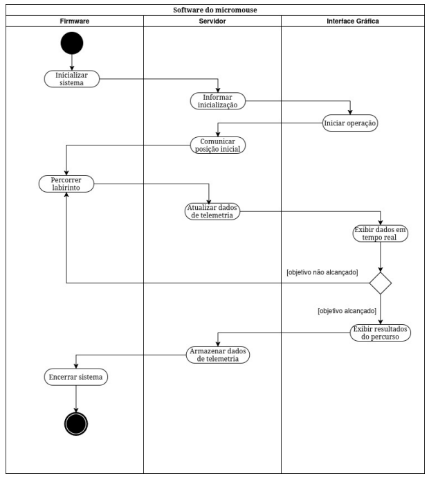
Backlog do Produto — Requisitos Funcionais (MoSCoW)
Requisitos priorizados conforme metodologia MoSCoW. Todos os Must Have foram implementados e validados.
Must Have — Essenciais
Como usuário, eu quero iniciar a operação do micromouse pela interface web para executar o algoritmo autonomamente.
- Disponibilizar botão de início visível
- Iniciar operação em até 2 segundos após comando via Wi-Fi/Web
- Registrar horário de início da operação
Como operador, quero desligar o sistema física ou remotamente para garantir parada segura em caso de falha.
- Permitir desligamento físico e remoto
- Entrar em fail-safe em perda de conexão por mais de 3 segundos
O sistema deve detectar paredes para evitar colisões durante a navegação autônoma.
- Detectar obstáculos à frente e laterais
- Operar entre 5 cm e 10 cm de alcance
- Manter distância mínima de 2 cm das paredes
O micromouse deve parar automaticamente ao alcançar o centro do labirinto.
- Detectar região central 2×2
- Parar completamente (PWM = 0) dentro de tolerância de 2 cm
- Taxa de acerto ≥ 95% na detecção do centro
- Não reiniciar movimento após parada
O sistema deve processar dados dos sensores para tomada de decisão durante a navegação.
- Processar dados em FIFO com latência máxima de 50 ms
- Validar integridade dos dados; descartar leituras inválidas
- Gerar comandos válidos: parar, frente, esquerda ou direita
- Taxa de atualização mínima: 10 Hz
O rato deve registrar o ambiente e utilizar esses dados para mapear o labirinto e navegar.
- Detectar paredes frontais e laterais em cada célula
- Marcar células visitadas e posição atual
- Atualizar mapa a cada nova célula; guardar em memória
- Salvar dados no banco de dados
O software deve identificar o percurso ótimo para maximizar a eficiência no labirinto.
- Encontrar caminho válido sem colisões ou loops infinitos
- Minimizar quantidade de células percorridas
- Reexecutar o percurso ótimo após mapeamento completo
O sistema deve processar dados em tempo real para tomar decisões continuamente durante a operação.
- Coletar dados em intervalos máximos de 50 ms
- Tempo de processamento por ciclo ≤ 30 ms
- Registrar falhas de sensores; continuar com os demais
O sistema deve gerar comandos de movimento com base no algoritmo de navegação.
- Gerar comandos a cada ciclo (célula percorrida)
- Evitar colisões; calcular rotas
- Enviar comandos com latência máxima de 50 ms
O sistema deve transmitir telemetria continuamente durante a execução, sem travamentos e com atraso mínimo.
- Dados exibidos em tempo real na interface web
- Atraso entre leitura e exibição ≤ 100 ms
- Sem interrupções ou perdas que comprometam a continuidade
Should Have — Importantes
Latência entre detecção de obstáculos e resposta dos motores não deve ultrapassar 3 s. O sistema deve realizar curvas de 90° mantendo distância segura das paredes.
O micromouse deve concluir a missão sem interrupções críticas durante a execução completa do percurso.
Could Have — Complementar
Como cliente do sistema, quero que o micromouse aprenda com execuções anteriores para otimizar automaticamente o percurso em corridas futuras.
Resultados dos testes automatizados
Estratégia V&V em múltiplas camadas. Total: mais de 100 casos de teste com taxa de aprovação superior a 97%.
8 / 8 ✓
Módulos: FloodFill, bitmask, memória, fila — aprovados em 8,13 s
6 / 6 ✓
Bateria: low_battery, normal, tensão/corrente/potência — aprovados em 0,88 s
36 / 36 ✓
30 testes de negócios em 7 arquivos — 2,04 s
6 testes de API/CORS/404
WebSocket (TI-BE-01): telemetria bidirecional ESP32 ↔ React validada
13 / 13 ✓
Filtros e histórico — 100% cobertura — 1,77 s
19 / 20 ✓ (E2E)
Playwright: 95% aprovação. 1 falha isolada em history.spec.js:48 (mock visual — backlog)
Algoritmo testado sobre labirintos complexos (example2.num e example5.num):
- Fase 0: Exploração de (0,0) até célula central — ✓ aprovado
- Fase 1: Retorno seguro ao ponto (0,0) — ✓ aprovado ("Retorno concluído!" registrado no log)
- Fase 2: Speed Run sem colisões — ✓ aprovado
| Caso de Teste | Descrição | Evidência / Suíte | Status |
|---|---|---|---|
| CT01 | Rato atinge centro do labirinto via FloodFill | TI-MMS-01 (Fase 0) — example2 e example5 | ✓ Aprovado |
| CT02 | Rato retorna à posição (0,0) identificando caminhos alternativos | TI-MMS-01 (Fase 1) | ✓ Aprovado |
| CT03 / US04 | Interface web exibe telemetria ao usuário sem perdas | TI-BE-01 + telemetria.spec.js (Playwright) | ✓ Aprovado |
Testes de integração
Validação das interfaces entre as três camadas principais: Frontend (React/Vite), Backend (Node.js + WebSocket) e Banco de Dados (PostgreSQL).
- TI-BE-BD-01 — Persistência de tentativa em HISTORICO
- TI-BE-BD-02 — Gravação de telemetria ≤ 100 ms/op
- TI-BE-BD-03 — Registro de trajeto com sequência correta
- TI-BE-BD-04 — Consulta por intervalo de tempo
- TI-BE-BD-05 — Integridade transacional (rollback)
- TI-BE-FE-01 — Telemetria WebSocket → React ≤ 100 ms
- TI-BE-FE-02 — Comandos início/parada ≤ 1 s
- TI-BE-FE-03 — Fail-safe por timeout de conexão (3 s)
- TI-BE-FE-04 — Histórico via GET /api/historico
- TI-BE-FE-05 — Tratamento de erros 4xx/5xx
- TI-FE-BD-01 — Consistência pós-persistência no histórico
- TI-FE-BD-02 — Filtros sobre dados reais do banco
- TI-FE-BD-03 — Integridade do trajeto visualizado
Resultado do teste físico integrado: Robô completo (PETG + ESP32 + LiPo + sensores IR + motores N20) testado no labirinto MDF. Inicialização via interface web ✓ · Percepção e controle cinemático ✓ · Mapeamento e chegada ao centro ✓ · Speed Run ✓ · Telemetria ininterrupta ✓ · 100% das funcionalidades propostas atingidas.
Protótipos de interface (Figma)
Protótipos desenvolvidos para testar telas e fluxos de navegação antes da implementação.
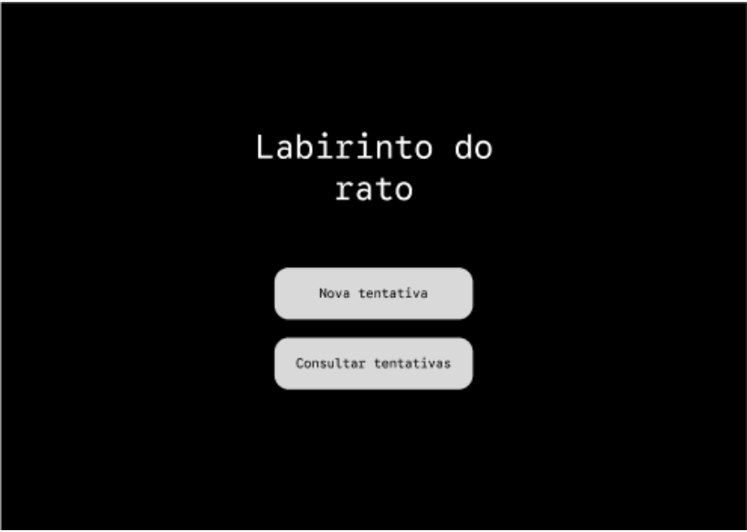
Acesso para nova travessia e histórico
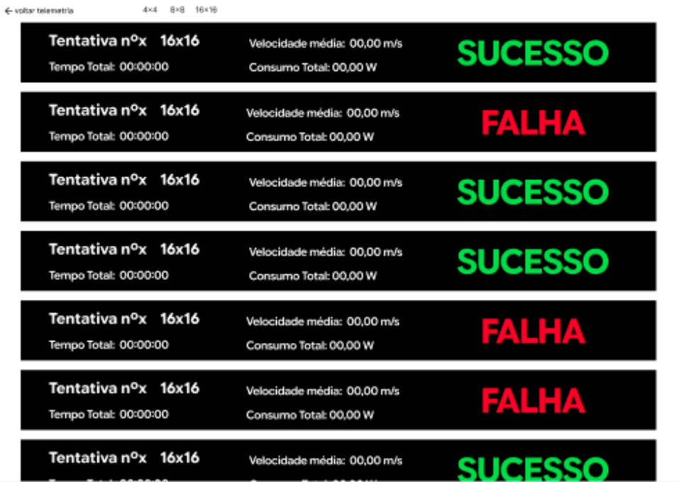
Telemetria em tempo real + mapa do labirinto
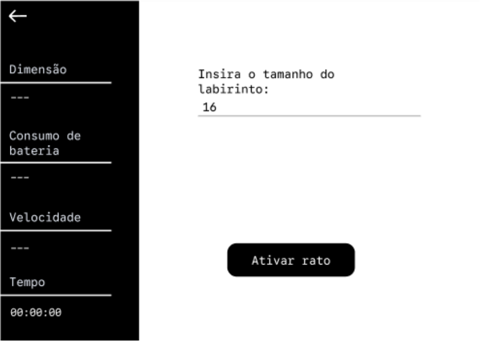
Lista com status: SUCESSO / FALHA
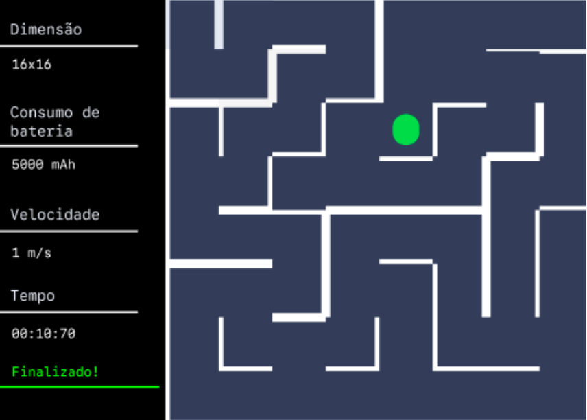
Rodando a tentativa
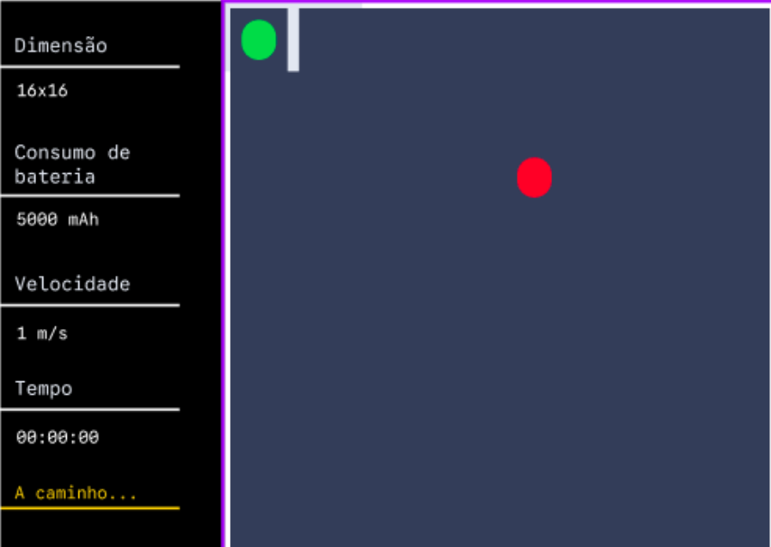
Início de tentativa